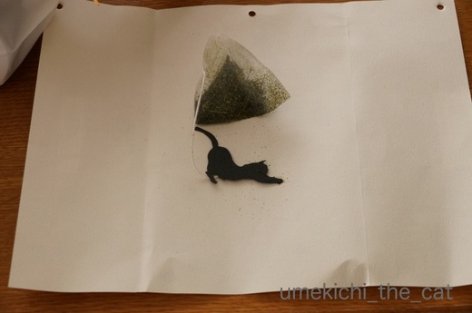
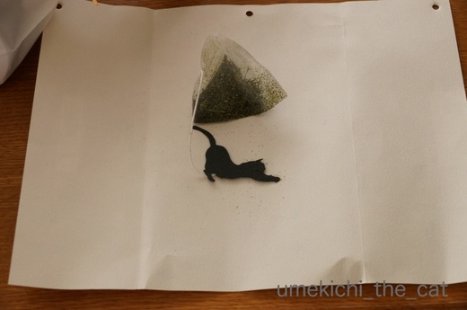

お客様がやってきた！今回は強敵だったのだ！！ [梅吉]
昨日10日、我が家にお客様が来てくださいましたよ。
Rongo-Rongoのリュカさんと、リュカさんの大阪めぐりをアテンドされていたくつしたにゃんさん。
我が家のすぐ近くの神社までいらっしゃると聞いて梅吉に会いにきてもらったのです。

さっそくリュカさんからまたたびキャンディのお土産をもらった梅吉さん。
見せた瞬間背中の毛が「ボーーーッツ！」と逆立ったんだとか。
興奮して手で引き寄せようとしています^^;
「白いええやつ」越しに「遊ぼうよ〜」と言われて
![[猫]](https://blog.ss-blog.jp/_images_e/101.gif) わしとやるんかー！
わしとやるんかー！

あんたも やるんかー！！

しかし、このお二方、フツーのお客様とは様子が違います。
だってガブガブされに来たのですよ(≧ω≦｡)
勝手が違って梅吉敗走w
リュカさんの腕にガブーッ。
めっちゃ笑顔で反撃されるww
これらな あんたも こうさんやろー！！

喜ばれちゃって必死の形相で撤退しようとする梅吉(≧▽≦)
「梅吉くん、匂い嗅がせてーーーー！」
あにすんじゃー![[むかっ（怒り）]](https://blog.ss-blog.jp/_images_e/152.gif)

お、梅吉反撃のガブ？と思ったらくつしたにゃんさんの腕をマジ嗅み。

おねーさんの おうちにも にゃんこはんがおんねんな
姐さんのかほりや よろしゅうつたえてや・・・
と、たくさん遊んでもらった梅吉。
たくさん遊んでもらったからか昨夜はぐっすりおねんね。
夜中に一度も起こされませんでした＾＾
リュカさんくつしたにゃんさん梅吉に会いに来てくれてありがとうね。
梅吉にガブガブされたい方、拙宅へのお越し、お待ちしておりますよ![[黒ハート]](https://blog.ss-blog.jp/_images_e/136.gif)
 ↑ガブッと一押し↑
↑ガブッと一押し↑
明日は法事で札幌日帰りです。早起きしなくちゃー。
みなさんの所へのご訪問遅れちゃいます。ごめんなさい！！
お二人からお土産もたくさんもらっちゃいました。
お手伝い付き^^;
包み紙についていた紐がお気に召したご様子。
真っ赤な缶に黒猫が映えます。
空いた缶に何を入れようかな〜♪

ティーパックのお茶にはニャンコが＾＾
いただいた豚まんはお夕食に化けましたよ！
ポッキーは久しぶりと思ったら今日は11月11日、ポッキーの日。
（今日はほか40くらい〇〇の日、があるようですね。）
お二人ともありがとうございましたm(_ _)m
Rongo-Rongoのリュカさんと、リュカさんの大阪めぐりをアテンドされていたくつしたにゃんさん。
我が家のすぐ近くの神社までいらっしゃると聞いて梅吉に会いにきてもらったのです。

さっそくリュカさんからまたたびキャンディのお土産をもらった梅吉さん。
見せた瞬間背中の毛が「ボーーーッツ！」と逆立ったんだとか。
興奮して手で引き寄せようとしています^^;
「白いええやつ」越しに「遊ぼうよ〜」と言われて


しかし、このお二方、フツーのお客様とは様子が違います。
だってガブガブされに来たのですよ(≧ω≦｡)
勝手が違って梅吉敗走w
リュカさんの腕にガブーッ。
めっちゃ笑顔で反撃されるww

喜ばれちゃって必死の形相で撤退しようとする梅吉(≧▽≦)
「梅吉くん、匂い嗅がせてーーーー！」

お、梅吉反撃のガブ？と思ったらくつしたにゃんさんの腕をマジ嗅み。

と、たくさん遊んでもらった梅吉。
たくさん遊んでもらったからか昨夜はぐっすりおねんね。
夜中に一度も起こされませんでした＾＾
リュカさんくつしたにゃんさん梅吉に会いに来てくれてありがとうね。
梅吉にガブガブされたい方、拙宅へのお越し、お待ちしておりますよ
明日は法事で札幌日帰りです。早起きしなくちゃー。
みなさんの所へのご訪問遅れちゃいます。ごめんなさい！！
お二人からお土産もたくさんもらっちゃいました。
お手伝い付き^^;
包み紙についていた紐がお気に召したご様子。
真っ赤な缶に黒猫が映えます。
空いた缶に何を入れようかな〜♪

ティーパックのお茶にはニャンコが＾＾
いただいた豚まんはお夕食に化けましたよ！
ポッキーは久しぶりと思ったら今日は11月11日、ポッキーの日。
（今日はほか40くらい〇〇の日、があるようですね。）
お二人ともありがとうございましたm(_ _)m
タグ：お客様

カフェオレ色の梅吉

梅吉 2023年8月10日 永眠


梅吉と出会った譲渡会

犬猫の理由なき殺処分ゼロ
妄想広告
UMEKICHI 光

爆発的に早い！
時々攻撃的！
Thanks to Mr.Boss365
爆発的に早い！
時々攻撃的！
Thanks to Mr.Boss365

お邪魔致します〜(^^)/♪
この度は私までお招き頂き楽しい時間をありがとうございました！
スッカリ梅吉くんの虜になっています(≧∀≦)
ねこマニアの接待と激しいガブ返しに驚き、梅吉君もお疲れになったのでしょうね。
これに懲りずにまた遊んでくださいませ♪
ガブガブお見舞いされに参ります！！(^^)
by くつしたにゃん (2017-11-11 16:03)
梅吉さん、反撃されて顔を押さえられていますね！
お姉さんには敵わないのですね(^ ^)
只今東北新幹線で東京に戻る最中です。
by ma2ma2 (2017-11-11 16:09)
梅吉さん！今回は勝手が違う？？
にゃんこに慣れているのが
ものすごく分かりますね(*^_^*)
by きぃ (2017-11-11 16:41)
ウププ、梅吉さんってばタジタジですねぇ(⌒-⌒; )
ニャンコ好きな人は構ってくれればもうそれだけで嬉しいから、
ガブガブされてもケリケリされても笑顔で寄ってきますよぉ=(^.^)=
by ニッキー (2017-11-11 17:35)
梅吉さんがタジタジになるとは、お二人ともただ者じゃありません。でも猫好きって猫にはすぐ分かるんですよね。遊んでもらえて楽しかったね梅吉さん。センスの良いお土産にも感心しました~。
by zombiekong (2017-11-11 17:36)
ヾ( 〃∇〃)ﾂ ｷｬｰｰｰｯ♪ ガブガブのおもてなし、これまでと勝手が違ったんでしょうね！愛されまくって、すべてのチカラを使い尽くして・・・ぐっすり。
楽しい楽しいひと時だったんですねー。にゃんこ愛が世界に広がりますように！
by Ginger (2017-11-11 17:36)
初めまして。
楽しいひと時だったようですね。
梅吉、昔(いや今も)実家にいる、犬のぬいぐるみの名前が梅吉でした(๑´ㅂ`๑)
お邪魔したいのですが、残念ですが、私は猫アレルギー( ´•̥̥̥ω•̥̥̥`)
by ともち (2017-11-11 21:05)
大興奮の梅吉さん、向かって行ったりタジタジだったりで忙しい1日でしたね。
黒猫さんの赤い缶、何が入るのか楽しみです。
札幌は雪予報で、寒そうです。
気をつけて、風邪などひかれませんように。
by kiki (2017-11-11 21:36)
さすがの梅吉さんも、スーパー猫使いお二人が相手では敵いませんね(^▽^;)
ガブガブが全く通じなくて慌てる梅吉さん、匂いかがれてるところなんて最高にかわいい♪
楽しい一日になりましたね(*^▽^*)
by ゆきち (2017-11-11 21:43)
いつも勝手が違うので焦ったのかな？^^;
それにしても梅吉さん、人見知りしないのですね。エライ！
by yes_hama (2017-11-11 22:02)
ガブガブ堪能されて梅吉さんも最初はビビリ気味だったけどお互い楽しめましたね！私もコワイけど噛まれてみたい・・・かも？
by みぃにゃん (2017-11-11 23:40)
わははははー！(≧∀≦)
強敵の登場でほんまにタジタジやんーっ。
かなりお疲れになったようで(^_^;)
by よーちゃん (2017-11-12 07:10)
私はガブガブは苦手なので遠慮しておきます＾＾；
by ぽちの輔 (2017-11-12 07:16)
初対面（・・・・ですよね？）の人間をガブッとは梅吉くん、
肝っ玉が据わってますね！
ねこ茶、私も雑貨屋さんで見かけてチェック入れてました。
自宅使いにはお値段的にももったいないけれど、
ねこ好きの方への手土産にはぴったりだな～って。
by ハリネズミ (2017-11-12 07:31)
梅吉さん、見事に反撃されてますね。
でも、ぐっすり眠れて良かったですね(^_^)
by kou (2017-11-12 07:50)
お客様への接待は完璧（??）ですね（＾＾;
梅吉さん、お疲れ様ですね。
by Raccoon (2017-11-12 10:18)
またたびキャンディいいですね～！
私は、爪とぎについてきたまたたび粉をかけようとして
間違えてきな粉をかけた事があります(^_^;)
by でんさん (2017-11-12 11:55)
わ～。羨ましい～。
梅吉くんにガブガブの幸せ注入してもらいたいよ～♪
梅吉攻撃が効かないお二人。手ごわかったのかな？
撤退さえも許されないｗ
いっぱい遊んでもらって爆睡でしたか。楽しかったのね。
お土産も素敵です！
札幌、行ってらっしゃいませ(^-^)
by emi (2017-11-12 14:27)
梅吉くん全力で遊んで、夜もぐっすりお休みだったんですね＾＾
ガブガブ注入なんて羨ましいな～♪
猫好きさんの来客は楽しいですね。
お姉さんのお家のニャンコのニオイって
わかるんだね。
猫茶のお土産は、センス キラリン☆ですね( ´∀｀ )
by マーヤ (2017-11-12 14:47)
わあ、楽しそう！
ガブガブは望むところ？
勝手が違う梅吉さん、たじろいでる～でも、遊びまくって楽しんだでしょうね＾＾
猫の匂いには気が付きますよね～。
爆睡もほほえましいです＾＾
素敵なお土産ばかり！ 猫茶？、こんなのあるんですねー＾＾
by sana (2017-11-12 15:09)
いま、東京に帰る新幹線の中です。
ちぃさん、梅吉くんに会えて大感激でした！だんな様にも^_^
梅吉くん、次回はもっともっとチューチュー吸うからね(笑)
今回、鼻チューは奪っちゃったし(笑)
反撃のパワーアップを楽しみにしているよーww
ちぃさん、ほんとにありがとう。札幌、気をつけて帰ってきてね。
by リュカ (2017-11-12 18:29)
梅吉くん、勝手の違いに戸惑いつつ
喜んでますねー^^
by ryang (2017-11-12 23:30)
人慣れしているのですね〜！
我が家の2/3はもれなく逃げます・・・（そして「無」になる・・・）
勝手の違った梅吉くんの必死の抵抗（笑）
わたしもガブガブされるのは本望です(｡-_-｡)
by Ja-Kou66 (2017-11-12 23:59)
梅吉さんの必死の形相が・・・
どちらも、只者ではない事がわかります(^^)
by riverwalk (2017-11-13 08:32)
お客様、強い！ 素晴らしい！！
噛まれてもパンチされても、、、
いや、されればされるほど喜ぶお2人の姿が、目に浮かぶようでした～ｗ
梅吉さん、完敗？(^▽^;)
お初の方でも、本気で遊んでくれる梅吉さん、かわゆすぎるっ！！
あ”－－－っ、オバちゃんも噛んでほしいわぁ。
ねこ茶、聞いたことあります！！ これはカワイイですなぁ♪
by morichan (2017-11-13 14:39)
梅吉くん攻めには弱いのね(*^^*)でも逃げず隠れずおもてなしの姿勢は立派です!!
Chat noirのパッケージイイですよね。紙袋や器も捨てられずに残してあります('◇')ゞ
by palpal (2017-11-13 15:22)
くつしたにゃんさん＞
拙宅にもブログにもお越しいただいてありがとうございました♪
予定の中に割り込んじゃって「申し訳ない」と思っていたのですが・・・
楽しかったですねー＾＾無理にお誘いして本当によかった！
梅吉は「つぎは まけへんで」と
日々おとーさんとプロレスに励んでいます( *´艸｀)
くつしたにゃんさんも更にパワーアップの上お越しくださいね(^_－)☆
ma2ma2さん＞
まさか家族以外からこの様な反撃があるとは思っていなかったのでしょう。
梅吉、お姉さんにたじたじでしたよー(≧ω≦｡)
きぃさん＞
そうなんです！やっぱりニャンコ慣れしている方は扱いが違うなーと
改めて思いましたよ。
引きどころがわかっていらっしゃるのでガブガブ梅吉との絡みも
安心して見ていられました＾＾
ニッキーさん＞
いくら好きでも梅吉のガブの勢いには怯むだろう・・・と思っていたのに！
猫好きお姉さんのパワーは予想以上でした( *´艸｀)
梅吉の絡みを楽しんでいただけて嬉しかったです！！
梅吉はきっとニッキーさんにもガブガブすると思いますよwww
zombiekongさん＞
そう！私の予想以上に只者ではなかった！！
そして梅吉も思った以上に一緒に遊んでびっくりしました。
やっぱり扱いが上手いと猫も楽しいのでしょうね＾＾
お土産は可愛いものばかりで嬉しかったです〜。
おまけにお夕飯の手間まで省けちゃいましたw
Gingerさん＞
家族とは違った絡み、若干戸惑いながらも
フレンドリーな梅吉なので楽しんでいましたよ＾＾
にゃんこ愛、更に更に広げたいですね！！
ともちさん＞
お越しいただいてありがとうございます♪
あらら、猫アレルギーなのですね？
それは残念！梅吉の様に自分からずんずん人に近づいちゃう猫は
余計にNGですね〜^^;
わんこの梅吉くん！ちょっと古びてしまっても
たっぷりと浴びた愛情を身にまとって
ご実家で静かに座っている様子が眼に浮かぶ様です＾＾
kikiさん＞札幌は寒かったですが（ほっぺたがピリッとしました）
体調を崩すことなく戻ってまいりました。
機内にマスクを持ち込み忘れたので「ゲッ！」と思っていたのですが
変な咳をしている人もいなくて助かりました〜。
梅吉はお客様がいる間は昼寝もしないでずっと付き合ってくれるので
夜はぐっすりでした＾＾
お客様からの思いも寄らない反撃も良いスパイスになったのでしょう(*>艸<)
ゆきちさん＞
まさにスーパー猫使いでした＾＾
梅吉を任せて安心のお二方だったので私も気が楽でした〜。
梅吉は「おとーさん、おかーさんよりも すごいのがおる！」って
思ったかもしれません(^_－)☆
yes_hamaさん＞
かな〜り焦ったと思われます ( *´艸｀)
梅吉があんなにタジタジしているの見たの（対私以外では）初めて！！
ええもん見せてもらいました＾＾
人見知りしない子だから膝の上にも乗っちゃうかもしれません。
でもそれはちょっとジェラシー感じちゃいそうですw
みぃにゃんさん＞
ビビる・・・というよりはタジタジがぴったりでしょうかwww
でも、とっても楽しそうでしたよ〜。
噛まれてもワンコほど痛くはないですよ(^_－)☆たぶん・・・
よーちゃん＞
タジタジ・・・この時の梅吉の心情を表すのに
これ以上適切な表現はないと思われます( *´艸｀)
おとーさん、おかーさんからとは違った楽しい刺激を受け
夜は白眼むいて寝てましたわwww
ぽちの輔さん＞
ガブガブ、細いキバは結構痛いですからね〜^^;
足にスリスリしてても突然タックルガブをするので
梅吉はぽちの輔さんには危険すぎますね ( *´艸｀)
ハリネズミさん＞
梅吉、全然人を怖がらないんです。
知らない人はむしろ好奇心いっぱいに自分から寄って行きます^^;
マンションの設備点検の業者さんとか来ると困るんですよね・・・
お仕事の邪魔だろうし、なにより足にガブしようとするんですよ！
そんな知らないおっちゃんの靴下噛むのやめてー！！
おかーさん後からチューできなくなるじゃない！！！
と引き剥がすのに必死な私です (^▽^;)
ねこ茶、お味も美味しいお茶でしたよ(^_－)☆
kouさん＞
梅吉の反撃もなかなかでしたが今回は敵が強すぎました ( *´艸｀)
でもね、構ってもらうのが大好きな梅吉はとっても楽しそうでした！！
Raccoonさん＞はい＾＾完璧すぎる接待、梅吉できる子！！(≧з≦)
心地よい疲労で夜はぐっすり。白眼むいていびきかいてましたwww
by ちぃ (2017-11-14 15:05)
でんさん＞
またたびキャンディ、
私もこんな素敵＆にゃんこが喜ぶおもちゃがあるの知りませんでした！
猫飼いの方のお土産は猫目線で嬉しいです。
あんまり喜ぶから今度注文してみようと思っています＾＾
きな粉！( *´艸｀)家の中が香ばしくて良い感じ〜♪
思わずお腹が空いちゃいそうです！！
emiさん＞
ふふふ、お二人ともたっぷりと幸せを溜め込んでお帰りになりましたよ＾＾
おかーさん以外に手強い人がいっぱいいる・・・
梅吉には良い社会勉強になったと思うの。
でね、今日エアコン修理の人が（動かなくなった！でも治った！！）
来たんだけど、果敢に足タックルしようとしてましたw
お客様お二方のおかげでうちに来るのは遊んでくれるいい人って
ますます思う様になったみたいーーーー！！！
札幌寒かった！でもお寿司が美味しかったわ♪
マーヤさん＞
にゃんこの匂いはわかるみたい。お二人自身はもちろん
持ち物全般にもふんふんふんふんして鼻水付けていましたよ^^;
それぞれのお家のニャンコさんが「ふ〜ん、がぶがぶ小僧ね・・・」と
梅吉からのメッセージを受け取っていそうです(^_－)☆
猫茶、私も手土産にしたいなって思いました！
飲んでも美味しかったの！！
sanaさん＞
家族とは違った遊び方が楽しかった様で
時に近寄って、時に遠巻きにそしてタジタジと
お客様がお帰りになるまでちゃんと接待してくれました＾＾
猫茶は飲んでも美味しかったですよ〜。
リュカさん＞
何かに導かれた様な来阪でしたね〜＾＾
楽しいひと時、猫の神様？
梅吉、鼻チューされたなんて知らなかったわ！
おとーさんおかーさんは家族だから別物とカウントすると
リュカさん、梅吉のファースト鼻チューを奪ったことになるのよwww
梅吉は日々プロレスで鍛錬とガブ技を磨いてますよ。
次もバッチリお相手しますよー！
また来てね〜〜〜〜(≧▽≦)
ryangさん＞
タジタジとしながらもそれを楽しんでましたね〜。
その証拠に寝たり隠れたりすることなく
ちゃんとお客様がお帰りになるまで付き合ってくれました＾＾
Ja-Kou66さん＞
梅吉は好奇心が強くて人が気になってしょうがないという感じです。
プラス構って欲しくてしょうがない・・・^^;
無になるどころか１＋０（なのに）＝３とか５になるくらいの勢いで
人に絡んでいきますよwww
あんなにタジタジした梅吉を見たのは初めてなので楽しかったです♪
ガブガブ・・・いかがですか？( *´艸｀)
riverwalkさん＞
梅吉の必死の形相、笑っちゃうでしょう？( *´艸｀)
写真で見てニヤニヤしちゃいました。
猫好きは（猫に対しては）へこたれない諦めないですからね〜。
梅吉、タジタジでした！
morichanさん＞
そうそう！ガブガブされたいお客様。
私と同じ血が流れる猫変態の方々でしたから( *´艸｀)
構われるのだ〜いすきな梅吉もタジタジでしたわw
その様子を見てニヤニヤ喜ぶ飼い主www
梅吉が「いつでも がぶがぶするでー」と言っておりますよ。
パワーアップして待ってますよ(^_－)☆
palpalさん＞思わぬ攻めにはお手上げの状態でしたw
付き合いの良い子なのでちゃんとお見送りまでしてくれましたよ(^_－)☆
Chat noir、こんな可愛いお店があるの知りませんでした！
関西圏では猫好きなら紙袋、一家に一枚ストック、みたいな？
お菓子も美味しかったよー。チョココーティングされたキャラメルサンド最高！！
by ちぃ (2017-11-14 15:50)